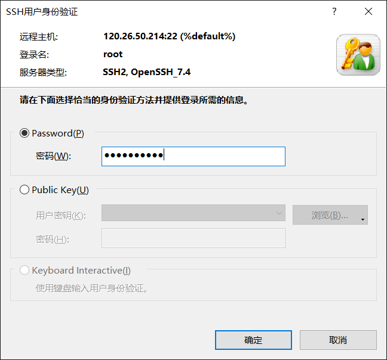

Xshell下的复制要使用Ctrl + insert；粘贴要使用Shift + insert
登录服务器指令：ssh root@公网IP

课上讲解的指令操作：
ls -l 列出文件的详细信息 -a 显示所有文件包括隐藏文件
cd . 当前目录 .. 上级目录 - 最近一次使用的目录 ~ 进入用户家目录
root->yum install -y tree 以树状图显示文件
stat 查看文件的所有属性
mkdir 创建一个目录
rmdir 删除一个空目录
rm -r 递归删除 -f 强制删除
touch 新建文本文件
cat 打印文件内容到终端显示
nano 打开编辑文本文件，ctrl + x 保存
uname -r 查看linux内核版本信息
vmstat 报告关于内核线程、虚拟内存、磁盘、陷阱和 CPU 活动的统计信息
sar 主要帮助我们掌握系统资源的使用情况，特别是内存和CPU的使用情况
stat 用于显示文件的状态信息
top 查看cpu资源使用状态
netstat 查看网络连接状态
free 查看内存资源状态
df 查看磁盘分区资源状态
grep选项中，-E选项可以用来扩展选项为正则表达式；
$表示匹配文件末尾，字符需要在$之前表示以字符结尾 a$表示以a结尾
^表示匹配文件起始，字符需要在^之后表示以字符起始 ^a表示以a起始
mkdir
-m 在创建目录的同时设置权限
-d 没有这个选项
-f 没有这个选项
-p 在创建多层级目录的时候若上级目录不存在则创建
批量删除当前目录下后缀名为.c的文件。如a.c、b.c
rm *.c *通配符，表示匹配任意字符任意次
find . -name "*.c" -maxdepth 1 | xargs rm
find . -name "*.c" -maxdepth 1 找到当前目录下.*结尾的文件，目录深度为1
xargs是一个强有力的命令，它能够捕获一个命令的输出，然后传递给另外一个命令，用于很多不支持|管道来传递参数的命令
相当于将前边命令的执行结果，也就是查找到的文件名，传递给后边的rm指令进行删除
find . -name "*.c" | xargs rm 没有进行深度控制，删除的不仅是当前目录下的文件，会将子目录下的文件也删除
cat 打印文件内容到终端显示
more 分页显示文件内容，但是通常向上翻页不好使
less 分页显示文件内容，可以灵活上下移动光标和翻页